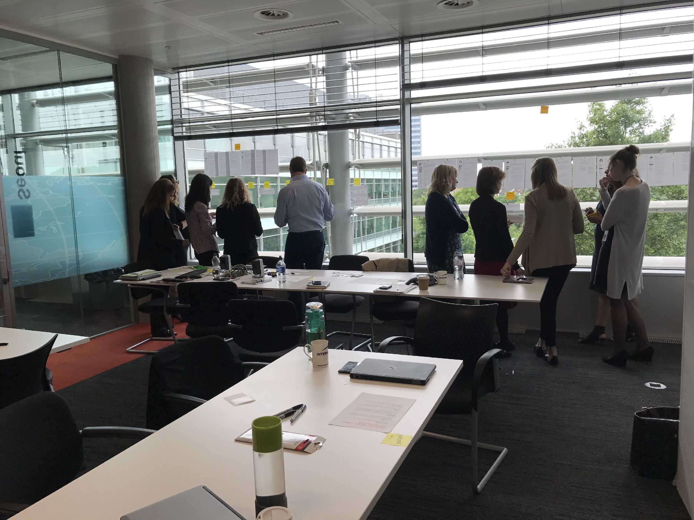
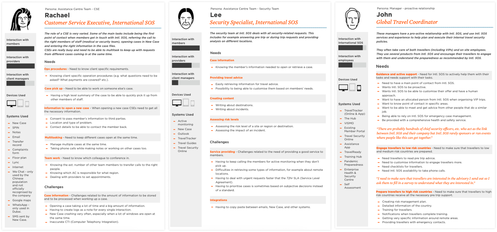
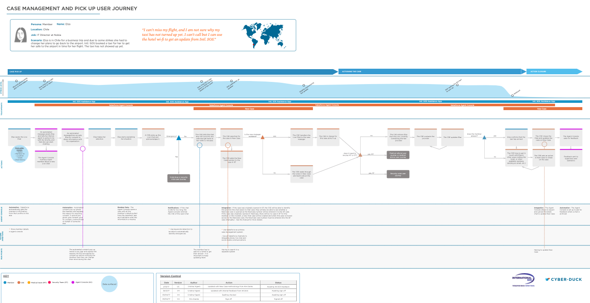
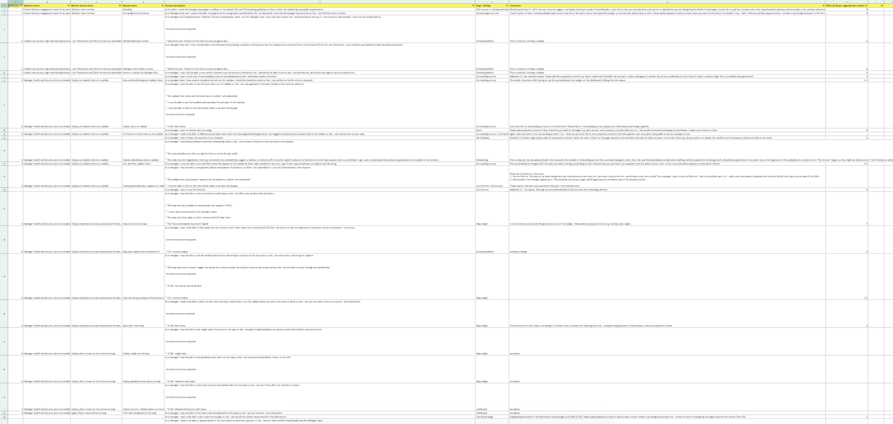
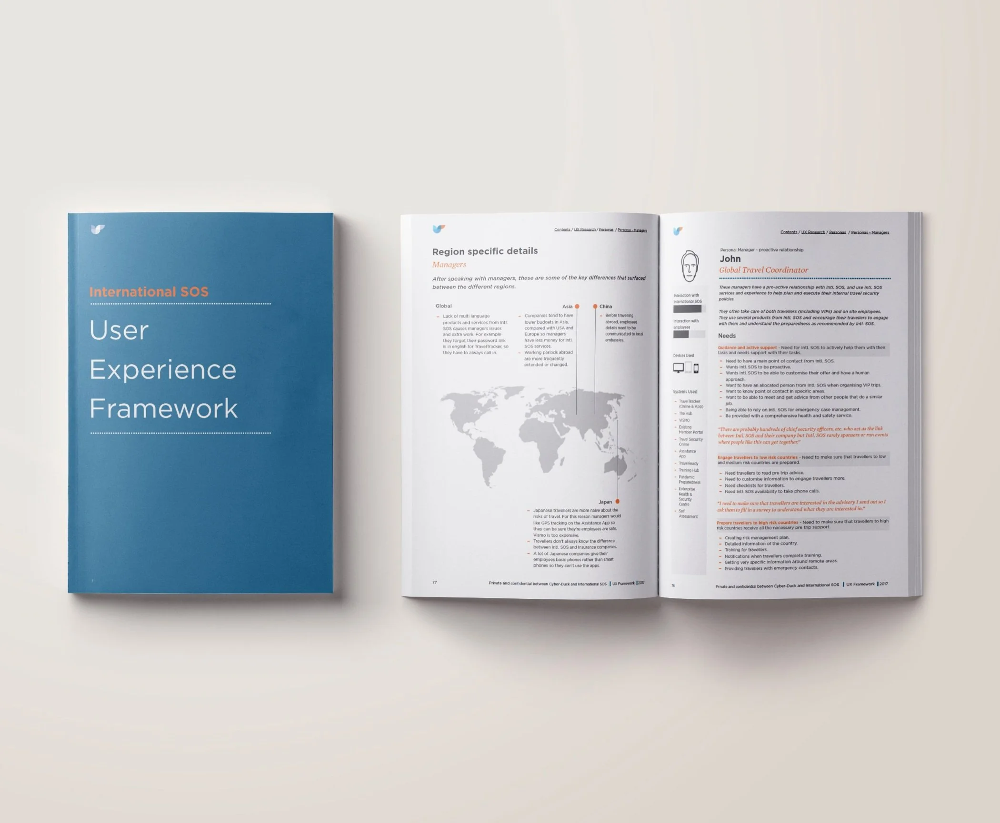
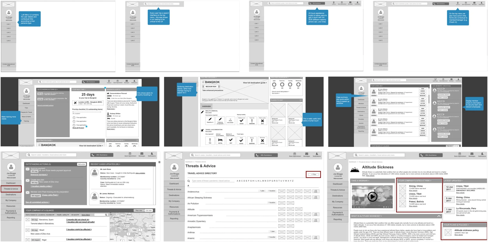
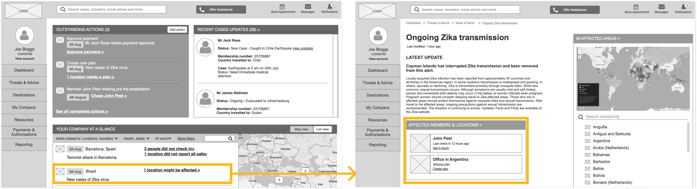
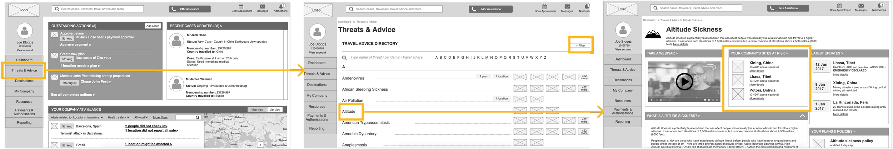
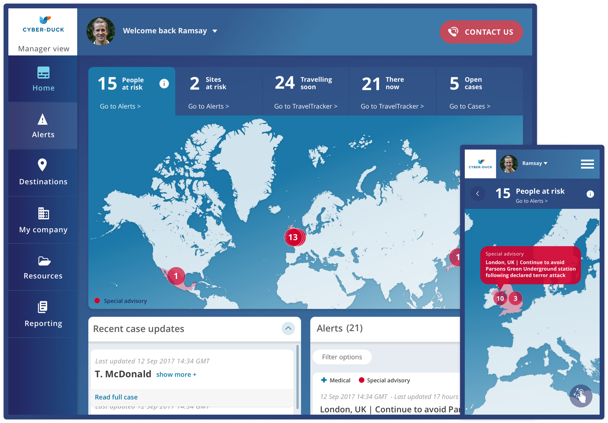

2019 · International SOS
International SOS
Digital transformation & responsive web app creation for a medical & travel security firm
About international SOS
International SOS is a medical and travel security services firm that helps organisations manage the health, safety and wellbeing of their people around the world.
The problem
Over the years they had developed many products which had become inconsistent and disjointed. Moreover, the different regions were growing more and more independent from each other, contributing to the issue of inconsistency.
With a UCD approach, I helped them define the problem and the roadmap and design a solution (a responsive web app) starting from MVP and building it up with an Agile methodology.
My role
Leading a team of 3 UX designers, deciding the strategy while remaining hands on.
Challenges
- Design for a global audience
- Coordinate stakeholders from different teams and countries
- Collate and communicate all the research outcomes into a Playbook
-
80.8
System Usability Scale result on the MVP
-
38
APIs integrated in the final solution
-
Goals & risks
Stakeholder workshops and business analysis.
-
Research
Global interviews, usability testing and personas.
-
Design & test
Journeys, prototypes and agile sprints.
-
The result
A successful MVP with 80.8 SUS score.
Goals & risks
Defining goals & risks
The first thing to do was to understand the business point of view: what were goals, expectations and risks?
I designed and lead the initial workshops which were helpful to gather enough information, but also to get all key stakeholders together in a room
The team and I analysed the results and understood that the success of the project massively depended on internal communication and stakeholders’ engagement.

Research
Researching a global audience
Now that I had a good understanding of the business vision it was fundamental to bring the focus back to the user.
I wrote a research plan which included:
- face to face and remote interviews (more than 70 interviews conducted globally)
- usability testing of current systems (more than 1000 hours of usability testing)
- ethnographic research in the company’s call centre (more than 24 hours spent there by the team)
- feature audit of their 14 main systems.
With the data gathered and through affinity mapping we were able to create personas.

User journeys
I then designed a new template for the user journeys, that would allow us to track:
- the steps that a user needed to go through
- the interactions between different actors
- the stress level of a user. This was really important for this project, as I was going to design critical interfaces to be used in times of emergency.
- the features that users had to interact with
- the requirements that we needed from the technology

Turning needs into solutions
It was time to turn theory into practice.
From the user needs I was able to write user stories. The user stories were checked across personas and were categorized into short, medium, and long-term goal groups.
The ultimate goal was now clear: to bring all current features under a unique portal, while at the same time changing some of the company’s internal procedures.
This exercise allowed me to build a step-by-step roadmap of priorities that could be implemented following an agile process.


Communicating the outcomes
My UX team and I collated all the research outcomes in a playbook. This was the perfect tool to share knowledge across the globe.
In parallel I also ran several workshops to roll it out and make sure that all key stakeholders were embracing it and adopting it in their daily jobs.
Design & test
Designing the solution
Following the first research effort, my team and I then started to design the solution. This was done through agile sprints of planning, designing, testing and iterating.
During each sprint I created low and high fidelity wireframes which I tested with real users. I worked together with a visual designer that worked on the higher fidelity designs.
The design iterations got really positive feedback, demonstrating the success of our process.

The result
Examples of addressed needs on early prototypes
Need: A security manager wants to check if any of their locations or travellers have been affected by an alert.
Solution: From the dashboard, they can see the latest alerts and filter them. Clicking on them, they see all the details, including whether locations or travellers were affected.

Need: A security manager wants to know which sites they should train for a specific threat.
Solution: From the menu, they can click on “Threat and advice”. They can then filter the list or find the threat they are looking for. Clicking through it, they can find all the details and the sites currently at risk.

A successful first release
The MVP was received with very positive feedback, and it obtained a score of 80.8 in the System Usability Scale.
The client was so happy with my work done on the project that in January 2019 they invited me to present the project to their Executive Committee (their 20 top managers) in Dubai.
I also presented the product to their customers in Zurich, Seattle and San Francisco in January-February 2019.

Testimonials
Cristina’s capacity to hit the ground running and articulate solutions to different audiences of the business was outstanding. Michelle Page, Project Manager at International SOS